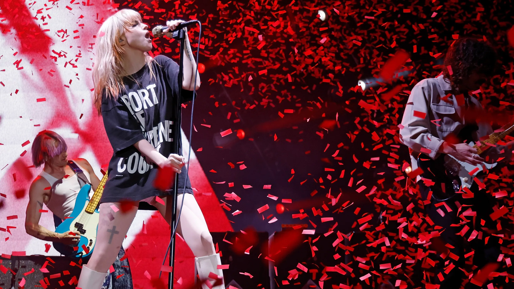
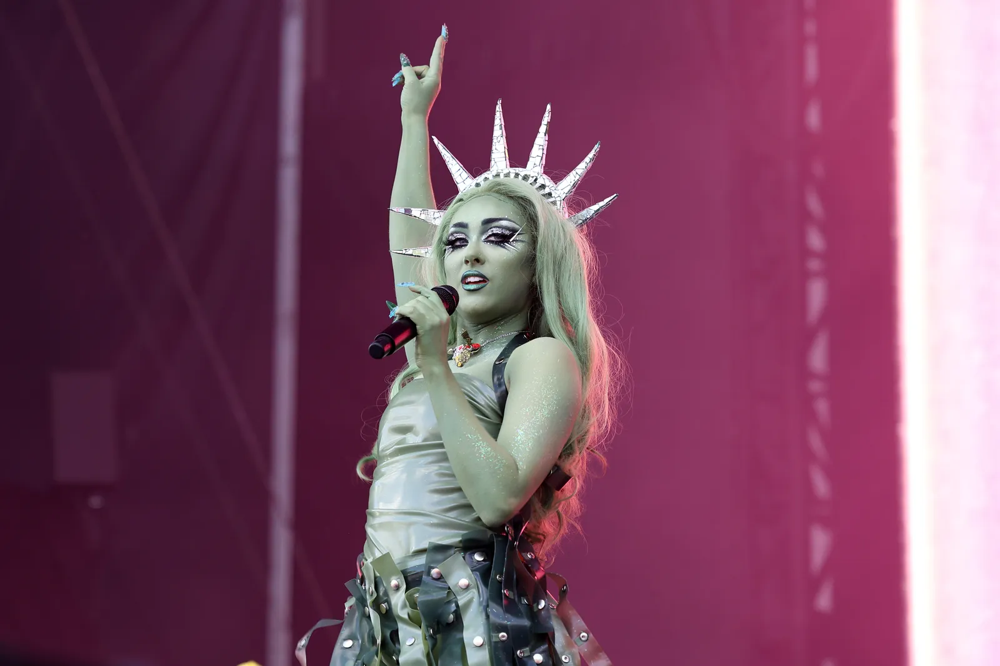

Paramore Wins Big at the 2023 Grammy Awards: A Milestone for Rock Music
Los Angeles, CA — Paramore took home two prestigious Grammy Awards at the 2023 ceremony, marking a significant moment for both the band and the rock music genre. The band won Best Rock Album for their latest release, This Is Why, and Best Rock Song for its title track, solidifying their place as one of the leading voices in modern rock. Since their formation in 2004, Paramore has evolved from a pop-punk sensation into a powerful force within the rock scene, consistently pushing boundaries and exploring new musical territory. Their victory at the Grammys is not only a personal achievement but also a signal of rock's resurgence in a music landscape dominated by pop and hip-hop. "This recognition is a testament to our growth as artists and the support of our incredible fans," said lead vocalist Hayley Williams during her acceptance speech. "We hope this inspires other musicians in the rock genre to keep creating and breaking barriers." Paramore's win is particularly significant in a time when the rock genre faces challenges in mainstream visibility. The band's ability to blend various styles—from punk to indie to pop—has allowed them to resonate with a diverse audience. Their success at the Grammys underscores the ongoing relevance of rock music in contemporary culture. Music critics are hailing Paramore's triumph as a catalyst for change, suggesting that it could lead to increased opportunities for other rock bands at major awards shows. With their innovative sound and commitment to authenticity, Paramore has not only paved the way for their own success but has also revitalized interest in the rock genre as a whole. As the music industry continues to evolve, Paramore's Grammy wins serve as a reminder of the enduring power of rock music and its ability to connect with listeners on a deep, emotional level. The band’s achievements in 2023 have set the stage for what promises to be an exciting future for rock music.
Chappell Roan: The Pop Phenom Shattering Barriers and Redefining Fame
Chappell Roan’s rise to fame is a testament to the power of authenticity, hard work, and a distinct artistic vision. Born Kayleigh Rose Amstutz in Willard, Missouri, Roan spent years honing her craft, but it wasn’t until recently that her bold, unapologetic style began to capture the attention of fans and critics alike. With a sound blending electropop, alternative, and theatrical elements, Roan has emerged as one of pop music's most intriguing new voices. Roan's breakthrough came with her 2023 debut album The Rise and Fall of a Midwest Princess. This record is a vivid tapestry of her life experiences, touching on themes of self-acceptance, identity, and the struggles of growing up in a small town. The album’s standout single, “Pink Pony Club,” became an anthem for misfits and outsiders, catapulting her to widespread recognition. Fans were drawn not just to her infectious melodies but to her fearless embrace of queerness, vulnerability, and her Midwest roots. What makes Chappell Roan’s ascent particularly compelling is her combination of theatrical live performances and her DIY ethos. Often dressing in flamboyant, self-designed outfits, Roan brings an element of fantasy and spectacle to her shows, earning her comparisons to icons like Lady Gaga and Florence Welch. Her fanbase has also grown rapidly due to her engaging social media presence, where she shares intimate glimpses of her creative process and personal journey. As her star continues to rise, Chappell Roan is proving that mainstream success doesn’t require fitting into a mold. Instead, her authenticity and fearlessness in embracing her quirks and contradictions have made her a refreshing voice in pop music—a rising star whose story is just beginning.
